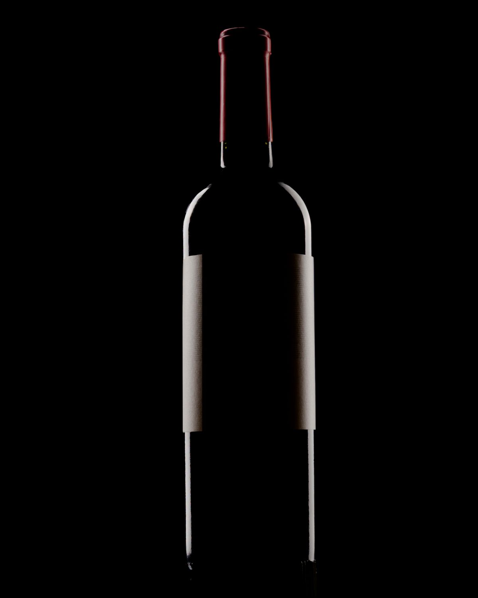
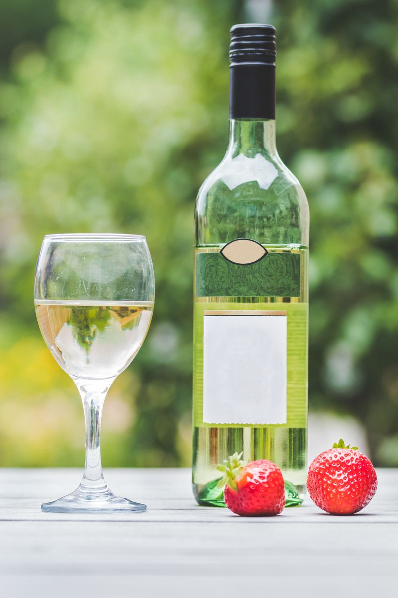

ROUGE · 2025 · 75 CL
La Roche
Lots goûtés, essais d’assemblage,
élevage suivi au chai.
18 € TTC / bouteille
DOMAINE MON CHAI · VISITE D’UN DOMAINE FICTIF
Suivez Halbert d’un lieu à l’autre. Les numéros racontent le travail ; les logos Mon Chai montrent comment le suivre dans le logiciel.
LE DOMAINE VU D’ICI
Voir la carte en grandLes saisons sont des repères : le calendrier varie selon les domaines et les années.
Automne · Choisissez un lieu pour parcourir les récits de la saison.
LA SUITE DU CHEMIN
Deux cuvées d’exemple pour découvrir le parcours de vente.

ROUGE · 2025 · 75 CL
Lots goûtés, essais d’assemblage,
élevage suivi au chai.
18 € TTC / bouteille

BLANC · 2025 · 75 CL
Du suivi de maturité
au choix du jour de récolte.
16 € TTC / bouteille
Cuvées et prix fictifs · Photos de bouteilles à titre illustratif · Panier de démonstration : aucun achat ni paiement.
PRENDRE LE TEMPS, AU DOMAINE
Des rangs au chai, une rencontre avec les gestes et les choix qui font le vin.
Marcher dans les vignes, observer ce que la saison donne à voir, puis retrouver ces questions au caveau autour de quelques verres.
1 h 30 · par adulte18 €
Entrer dans le chai, parler de vinification et d’élevage, puis déguster pour relier ce qui se passe dans les contenants à ce que l’on perçoit dans le verre.
1 h · par adulte12 €
Goûter plusieurs lots, essayer des proportions, comparer les équilibres. Un atelier pour approcher les discussions et les décisions d’un assemblage.
2 h · par adulte35 €
Trois expériences et tarifs fictifs · Réservation simulée, aucune disponibilité réelle.


MON CHAI, À VOS CÔTÉS
Un travail commence dans une parcelle, se poursuit au chai et engage vos stocks, vos factures et vos clients. Mon Chai relie ces informations pour suivre la vie du domaine dans un même outil.
Enregistrez vos interventions, retrouvez l’origine d’un vin, préparez un devis, suivez vos commandes et vos impayés. Depuis le téléphone, Mon Chai Notes permet aussi de dicter une opération, puis de la relire avant son envoi.
Parlons de votre organisation, de vos outils et de vos besoins. Nous vous présenterons Mon Chai à partir de ce qui compte pour votre domaine.
Un logiciel viticole conçu pour votre quotidien, avec un prix accessible. Découvrez les fonctions, posez vos questions et consultez nos tarifs pour voir ce qui correspond à votre domaine.
Vos usages et vos retours participent aux évolutions de Mon Chai. Le suivi des parcelles, des vins et des ventes se développe au contact du travail réel des domaines.
Nous créons aussi des sites pour raconter votre travail, présenter vos bouteilles et proposer vos expériences au domaine. Catalogue, ventes et réservations pourront être reliés à Mon Chai par de futures API, encore à construire.
Projection — futures API à construire
Choisir les produits, formats et prix de Mon Chai à présenter sur votre site. Garder la main sur ce qui devient public.
Faire arriver les demandes du site dans votre suivi commercial, avec prix et disponibilité à vérifier avant validation.
Rassembler les demandes de visite. Un agenda, ses capacités et ses confirmations restent à développer.
Choisissez une saison pour situer aussi les usages envisagés du logiciel dans la vie du domaine.
Cette démo n’est pas connectée au logiciel. Une demande ne vaut ni paiement ni réservation confirmée. Les récits et les informations publiés restent choisis par le domaine.